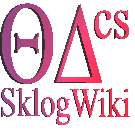
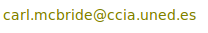

I have published over 100 notebooks on kaggle covering various aspects of machine learning (link)
I maintain the website SklogWiki, an open-edit encyclopedia dedicated to thermodynamics and
statistical mechanics, especially that of simple liquids, complex fluids, and soft condensed matter.
SklogWiki is particularly oriented towards theoretical studies and computer simulations.

[42]
Scientists in silico?
arXiv:1711.00678
2 Nov. (2017).
[41]
Calculation of Conformational Properties and Rouse Relaxation Times of PAMAM-EDA Dendrimers under Different pH Conditions
Macromolecular Theory and Simulations
volume 25, pp. 403-412 (2016).
[40]
Coarse-Grained and Atomistic Simulations for the G=4 PAMAM-EDA Dendrimer
Macromolecular Theory and Simulations
volume 24, pp. 432-441 (2015).

[39]
Nucleation free-energy barriers with Hybrid Monte-Carlo/Umbrella Sampling
Physical Chemistry Chemical Physics
volume 16, pp. 24913-24919 (2014).
Copyright (2014) The Owner Societies. This article may be downloaded for personal use only.
[38]
Binary Interactions between Dendrimer Molecules. A Simulation Study
Macromolecules
volume 47, pp. 5379-5387 (2014).
[37]
Molecular Dynamics Simulations of the Protonated G4 PAMAM Dendrimer in an Ionic Liquid System
Journal of Physical Chemistry B
volume 117, pp. 15157-15164 (2013).
[36]
A computer program to evaluate the NVM propagator for rigid asymmetric tops for use in path integral simulations of rigid bodies
Computer Physics Communications
volume 184, pp. 885-890 (2013).
[35]
A study of the influence of isotopic substitution on the melting point and temperature of maximum density of water by means of path integral simulations of rigid models
Physical Chemistry Chemical Physics
volume 14, pp. 15199-15205 (2012).
Copyright (2012) The Owner Societies. This article may be downloaded for personal use only.
[34]
The phase diagram of water from quantum simulations
Physical Chemistry Chemical Physics
volume 14, pp. 10140-10146 (2012).
Copyright (2012) The Owner Societies. This article may be downloaded for personal use only.
[33]
Forcefield parameterization and molecular dynamics simulation of flexible POSS® linked (NHC) (phosphine) Ru catalytic complexes
Journal of Physical Chemistry A
volume 115, pp. 12017-12024 (2011).
[32]
A quantum propagator for path-integral simulations of rigid molecules
Journal of Chemical Physics
volume 134, 054117 (2011).
Copyright (2011) American Institute of Physics. This article may be downloaded for personal use only. Any other use requires prior permission of the author and the American Institute of Physics.
[31]
Path integral Monte Carlo simulations for rigid rotors and their application to water
Molecular Physics
volume 109, pp. 149-168 (2011).
(pre-print freely available on the arXiv e-print service: arXiv:1012.2310v1)

[30]
Can gas hydrate structures be described using classical simulations?
Journal of Chemical Physics
volume 132, 114503 (2010).
Copyright (2010) American Institute of Physics. This article may be downloaded for personal use only. Any other use requires prior permission of the author and the American Institute of Physics.
[29]
Heat capacity of water: A signature of nuclear quantum effects
Journal of Chemical Physics
volume 132, 046101 (2010).
Copyright (2010) American Institute of Physics. This article may be downloaded for personal use only. Any other use requires prior permission of the author and the American Institute of Physics.
[28]
Quantum contributions in the ice phases: the path to a new empirical model for water -- TIP4PQ/2005
Journal of Chemical Physics
volume 131, 024506 (2009).
Copyright (2009) American Institute of Physics. This article may be downloaded for personal use only. Any other use requires prior permission of the author and the American Institute of Physics.
[27]
Anomalies in water as obtained from computer simulations of the TIP4P/2005 model:
density maxima, and density, isothermal compressibility and heat capacity
minima
Molecular Physics
volume 107, pp. 365-374 (2009).
(pre-print freely available on the arXiv e-print service: arXiv:0905.4009v1)
[26]
wikiFactor: a measure of the importance of a wiki site
arXiv:0902.3439v2
20 Feb (2009).
[25]
Phase behaviour of attractive and repulsive ramp fluids: integral equation and computer simulation studies
Journal of Chemical Physics
volume 126, 244510 (2007).
Copyright (2007) American Institute of Physics. This article may be downloaded for personal use only. Any other use requires prior permission of the author and the American Institute of Physics.
[24]
Hard biaxial ellipsoids revisited: numerical results
Fluid Phase Equilibria
volume 255, pp. 37-45 (2007).
(pre-print freely available on the arXiv e-print service: arXiv:cond-mat/0611360v1)
[23]
Computers and Liquid State Statistical Mechanics
Nova Science Publishers Inc., New York: "Computer Physics Research Trends" (Invited chapter)
pp. 243-263 (2007) ISBN: 978-1-60021-595-7
(pre-print freely available on the arXiv e-print service: arXiv:cond-mat/0610771v1)
[22]
Can simple models describe the phase diagram of water?
Journal of Physics: Condensed Matter
volume 17, pp. S3283-S3288 (2005).
[21]
Non-Markovian melting: a novel procedure to generate initial liquid like phases for small molecules for use in computer simulation studies
Computer Physics Communications
volume 170, pp. 137-143 (2005).
(pre-print freely available on the arXiv e-print service: arXiv:0907.2803v1)
[20]
Radial distribution functions and densities for the SPC/E, TIP4P and TIP5P models for liquid water and ices Ih, Ic, II, III, IV, V, VI, VII, VIII, IX, XI and XII
Physical Chemistry Chemical Physics
volume 7, pp. 1450-1456 (2005).
Copyright (2005) The Owner Societies. This article may be downloaded for personal use only.
[19]
The range of meta stability of ice-water melting for two simple models of water
Molecular Physics
volume 103, pp. 1-5 (2005).
(pre-print freely available on the arXiv e-print service: arXiv:0902.3966v1)
[18]
Formation of high density amorphous ice by decompression of ice VII and ice VIII at 135 K
Journal of Chemical Physics
volume 121, pp. 11907-11911 (2004).
Copyright (2004) American Institute of Physics. This article may be downloaded for personal use only. Any other use requires prior permission of the author and the American Institute of Physics.
[17]
Molecular modeling of flexible molecules. Vapour-liquid and fluid-solid equilibria
Journal of Molecular Liquids
volume 113, pp. 37-51 (2004).
[16]
Characterization of the order-disorder transition of a charged hard-sphere model
Physical Review E
volume 68, 052501 (2003).
Copyright (2003) American Physical Society. This article may be downloaded for personal use only. Any other use requires prior permission of the author and the American Physical Society.
[15]
The properties of fully flexible Lennard-Jones chains in the solid phase: Wertheim theory and simulation
Molecular Physics
volume 101, pp. 2241-2255 (2003).
(pre-print freely available on the arXiv e-print service: arXiv:0902.4148v1)
[14]
The fluid-solid equilibrium for a charged hard sphere model revisited
Journal of Chemical Physics
volume 119, pp. 964-971 (2003).
Copyright (2003) American Institute of Physics. This article may be downloaded for personal use only. Any other use requires prior permission of the author and the American Institute of Physics.
[13]
The phase diagram of the two center Lennard-Jones model as obtained from computer simulation and Wertheim's thermodynamic perturbation theory
Journal of Chemical Physics
volume 118, pp. 10696-10706 (2003).
Copyright (2003) American Institute of Physics. This article may be downloaded for personal use only. Any other use requires prior permission of the author and the American Institute of Physics.
[12]
Mesophase formation in solutions of diblock copolymers simulated using the bond fluctuation model
Macromolecular Theory and Simulations
volume 4, pp. 237-242 (2003).
[11]
A Monte Carlo study of the influence of molecular flexibility on the phase diagram of a fused hard sphere model
Journal of Chemical Physics
volume 117, pp. 10370-10379 (2002).
Copyright (2002) American Institute of Physics. This article may be downloaded for personal use only. Any other use requires prior permission of the author and the American Institute of Physics.
[10]
The second virial coefficient of the dipolar two center Lennard-Jones model
Physical Chemistry Chemical Physics
volume 4, pp. 3000-3007 (2002).
Copyright (2002) The Owner Societies. This article may be downloaded for personal use only.
[9]
Scaling laws for the equation of state of flexible and linear tangent hard sphere chains
Physical Review E
volume 65, 052501 (2002).
Copyright (2002) American Physical Society. This article may be downloaded for personal use only. Any other use requires prior permission of the author and the American Physical Society.
[8]
The effect of flexibility on the phase diagram of simple molecular models.
Physical Chemistry Chemical Physics
volume 4, pp. 853-862 (2002).
Copyright (2002) The Owner Societies. This article may be downloaded for personal use only.
[7]
Fluid solid equilibrium for two dimensional hard disk chains from Wertheim's perturbation theory
Journal of Chemical Physics
volume 116, pp. 1757-1759 (2002).
Copyright (2002) American Institute of Physics. This article may be downloaded for personal use only. Any other use requires prior permission of the author and the American Institute of Physics.
[6]
Liquid crystal phase formation for the linear tangent hard sphere model from Monte Carlo simulations
Journal of Chemical Physics
volume 115, pp. 4203-4211 (2001).
Copyright (2001) American Institute of Physics. This article may be downloaded for personal use only. Any other use requires prior permission of the author and the American Institute of Physics.
[5]
Isotropic-nematic phase transition: influence of intramolecular flexibility using a fused hard sphere model
Physical Review E
volume 64, 011703 (2001).
Copyright (2001) American Physical Society. This article may be downloaded for personal use only. Any other use requires prior permission of the author and the American Physical Society.
[4]
The second virial coefficient of quadrupolar two center Lennard-Jones models
Physical Chemistry Chemical Physics
volume 3, pp. 1289-1296 (2001).
Copyright (2001) The Owner Societies. This article may be downloaded for personal use only.
[3]
Atomistic Modelling of Liquid Crystal Phases (in Advances in the computer simulation of liquid crystals )
NATO Advanced Study Institute: Science Series C: Mathematical and Physical Sciences
volume 545, Chapter 10 (1999).
ISBN: 978-0-7923-6099-5
[2]
Molecular dynamics simulations of a flexible liquid crystal
Molecular Physics
volume 97, pp. 511-522 (1999).
[1]
Molecular dynamics simulations of liquid crystal phases using atomistic potentials
Molecular Physics
volume 93, pp. 955-964 (1998).

Last modified: 2021-09-07